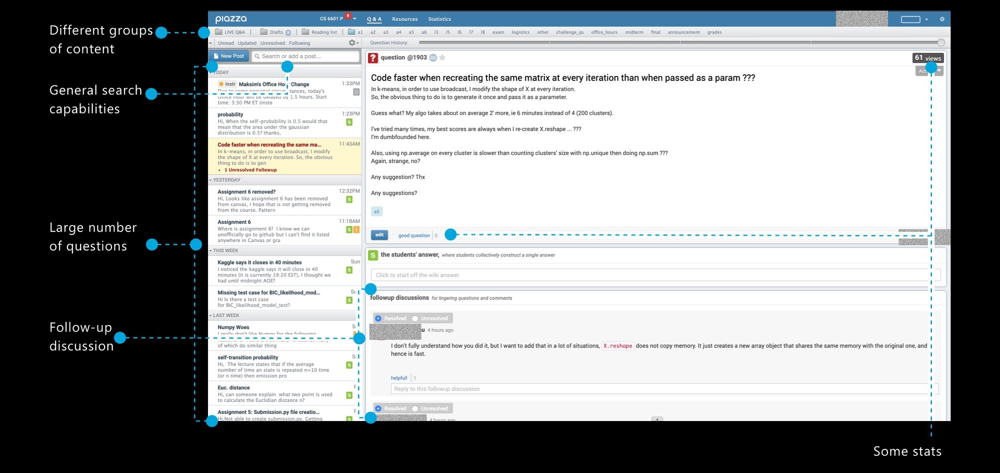
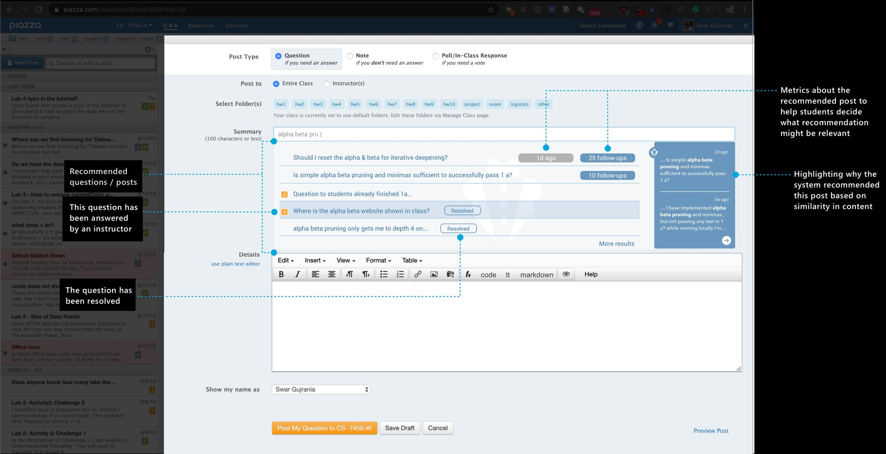
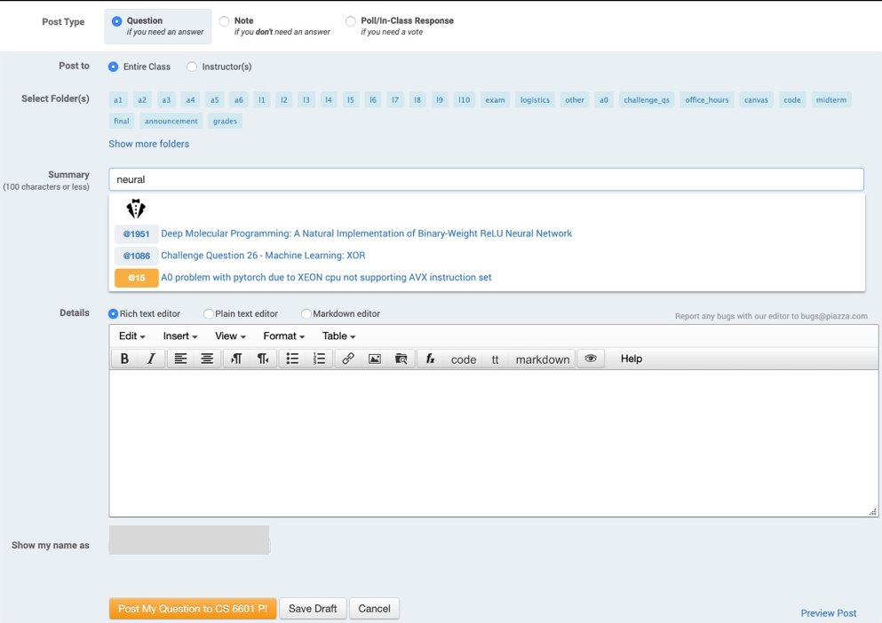
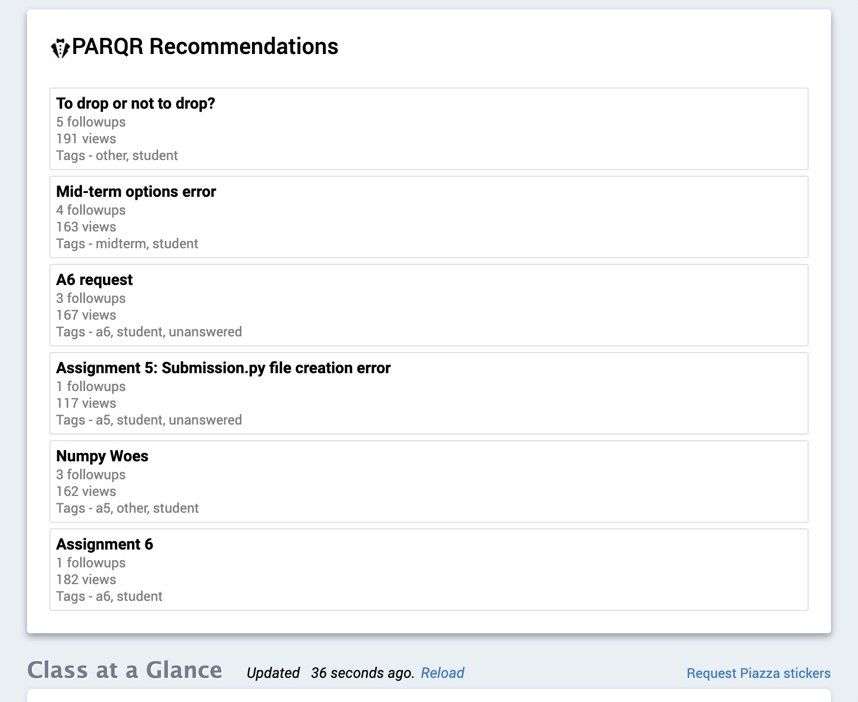

This work was published at ACM Conference on Learning @ Scale.
Link to the publication
SUMMARY
PARQR (Piazza Automated Related Question Recommender) is a Machine Learning driven recommendation system that improves the experience for online distance learning programs for both students and instructors. It reduces duplicate content and highlights important class activity to help users navigate the volume of content in a typical class of 200-300 students.
Currently, it works as an add-on for Piazza - a widely used platform for student collaboration and communication by many universities for both their in-class offerings as well as distance learning programs. It’s been actively used by Georgia Tech for its Online Master’s of Science (OMS) programs since 2018.
USERS
PARQR focuses on two main user groups:
College Students
who engage in class discussions. Their main tasks include posting questions, adding follow-ups to an existing post and answering questions.
Instructors & TAs
who respond to students’ questions and keep on top of all class activity and discussions. Many TAs are students supporting the professors.
PROBLEM
This is what a typical Piazza forum looks like:

Volume of content
Users feel overwhelmed when navigating through large volumes of class content.
Redundancy
It’s difficult for students to track what content has already been posted in the system, resulting in redundancy, particularly in case of private content.
What to search?
Students often don’t know which keywords to search on until after they complete their post.
Content quality
A lot of students post content to show class participation. This makes it difficult to find quality content.
Limited search
Static search responses limit what we can present to students and many times the results are less contextual.
To summarize, we focused on
How might we make online forums
more efficient, less redundant, and better focused?
USER RESEARCH
Every semester, the PARQR team rolls out a survey to a large number of OMS students of Georgia Tech to gather their feedback on the developments on PARQR.
Qualitative Feedback
The surveys we rolled out always have quantitative as well as qualitative components. We asked certain questions to identify:
- Current pain-points with Piazza
- Current feedback on PARQR
- Potential improvements for PARQR
Piazza pain-points:
- Piazza is overwhelming
- post volume discouraged me from using Piazza
- Too many conversations to follow
- Tons of duplicate posts
- Information is scattered
- would be nice if posts are found before user posts them
- you have to learn how to search
- Unable to find right information at the right time
- difficult to find information in threads
- no good way to distinguish valuable content from low-value content
Current PARQR Experience - Positive:
unobstructive,
convenient
posts easily
redundancy
better
recommendations
& suggestions
Search
well with
Piazza
concept
install
While students appreciated features like search, recommendations and the dashboard view, the quality of these features presented more scope of improvement. This was further reinforced by their feedback on what could be improved about PARQR.
Current PARQR Experience - Improvements:
recommendations
“Show relevance score”
“More training / should be more accurate”
“Search should extend to follow-ups also”
“Advanced search”
extensions
concerns
data is being used for
these recommendations”
‘Good’ Recommendation ???
We decided to dive deeper into users’ expectations of what makes a good recommendation. Of the things users recommended, we decided to focus on some (highlighted below) for the current iteration of the project.
- Sorted Recommendations
- Instructor or student endorsed answers
- Activity level - no. of follow-up discussions
- Recommendations according to class schedule
- Finding popular posts with many replies
- Questions with recent replies
- Semantic similarity, beyond word search
- Information related to class logistics
- Recommendations relevant to my most recent search
- Best Answers
The decision was based on the type of information we had access to, since we were piggybacking on the information available from Piazza.
SOLUTION DESIGN
Our team created an ML based post recommendation system, aimed specifically at reducing duplicate posts and focusing on making the process of consuming and managing large volumes of information efficient for students and instructors.
In-line recommendation when creating posts
PARQR suggests relevant content when users are typing the questions out. The recommendations update in real-time as students type. This prevents duplicate questions, and gets answers to students more quickly.

Student recommendation dashboard
When students return to Piazza, PARQR shows them the important content that they may have missed out on, while they were away, through a recommendation dashboard.
Click on the prototype to interact with it
Recommending similar questions that have been answered
When answering a question, PARQR suggests similar posts that have already been answered. The instructors can then simply add a reference to that answer to redirect students. This is really helpful when instructors have to answer large volumes of questions, many of which could be duplicate.
Click on the prototype to interact with it
Linking similar unanswered questions
In order to handle duplicate questions, PARQR provides the capability of combining multiple unanswered questions together such that the instructors can answer all the questions in one go. However, this functionality, as of now, does not allow modifying content for each linked question separately.
Click on the prototype to interact with it
USER FEEDBACK (from MVP)
The development and testing of the current project is underway. But here are some results from previous user research that inspired the current designs.
Last year’s Stats from a class
Every semester, the PARQR team rolls out a survey to a large number of OMS students of Georgia Tech to gather their feedback on the developments on PARQR. Below are some of last year’s stats from a class.
| Statistic | Spring 2017 | Spring 2019 |
|---|---|---|
| Enrolled students | 390 | 590 |
| Active students on Piazza | 385 | 590 |
| PARQR users (%) | 0 (0%) | 578 (98.0%) |
| Number of posts | 195 | 168 |
| Number of duplicate posts (%) | 50 (25.6%) | 30 (17.8%) |
| Posts per active student | 0.506 | 0.291 |
These results were taken after the MVP of PARQR was released in production (2019). This version only focused on the inline recommendations for students and dashboards for students and TAs, which were as follows:

